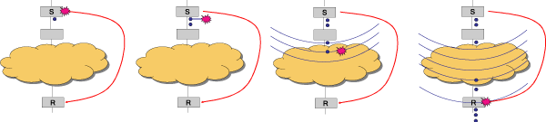

As part of our ongoing work to provide novel high-level programming abstractions for streaming applications, we are exploring "teleport messaging": a language construct that uses data dependences in the stream graph to provide a simple and precise mechanism for event handling. This work is in the context of the StreamIt programming language[1], an architecture-independent stream language that aims to improve programmer productivity within the streaming domain. In StreamIt, a program is represented as a set of autonomous filters (actors) that run in parallel and communicate using FIFO channels. Filters have an atomic "work" function that constitutes a single execution step; the work function is repeatedly invoked by the StreamIt runtime system.
Teleport messaging provides a way for filters to exchange out-of-band messages--that is, dynamic control messages that travel outside of the high-bandwidth communication channels. Such a message could be important for adjusting a runtime parameter elsewhere in the stream graph; for example, to boost a signal-to-noise ratio or to change an encryption protocol. However, because concurrent programs lack a notion of global time, the sender of a message needs a precise mechanism for indicating when the message should be delivered. To address this issue, teleport messaging uses the data items in the high-bandwidth communication channels: the sender can effectively "tag" an outgoing item as having a message attached, and the receiver will process the message when it sees the effects of that data item. A similar mechanism can be used to send messages up-stream.
Applications that are structured around streams of data are becoming increasingly pervasive. Stream programs include embedded systems for sensor nets and cell phones, desktop applications such as streaming media and networking, as well as high-performance servers such as HDTV editing consoles and hyper-spectral imaging. Performance is a critical factor in all of these domains, and programmers often sacrifice readability, robustness, and maintainability of their code in order to achieve it.
One difficult aspect of stream programming is reconciling regular, steady-state dataflow with irregular control messages. For modeling data paths of signal processing applications, Synchronous Dataflow (SDF) is a popular model of computation. An SDF graph consists of actors connected by communication channels; on each execution, an actor must consume and produce a constant number of items from its input and output channels. SDF is appealing because it can be statically scheduled and optimized.
However, the challenge comes when there is a dynamic, unpredictable event in the stream; for instance, an actor detects a low signal-to-noise ratio and sends a signal to the frontend to increase the amplification. How can a dynamic control message be delivered if all the communication patterns are static? The problem is further complicated when there is a constraint on the timing of the message. With the abundant parallelism in stream programs, how can concurrent actors have a common frame of reference with respect to time?
Teleport messaging provides a simple and effective solution to these questions. The high-level goals are two-fold: 1) to improve programmer productivity by providing a declarative mechanism for timing the delivery of control messages, and 2) to allow some dynamic behaviors in stream programs without sacrificing the rich optimization opportunities that are afforded by a static communication pattern.
Teleport messaging uses data dependences from the high-bandwidth communication channels in order to precisely describe the message delivery time. In the following, we give a sense of the formal semantics and then expand on the intuition.
We have formalized teleport messaging in terms of a "stream dependence function" (SDEP) which describes the flow of information through a stream graph. For any two filters A and B in the stream graph, we define SDEPA &larr B(n) as the minimum number of times that A must execute to make it possible for B to execute n times. This dependence is meaningful only if there is a directed path in the stream graph from A to B; otherwise, SDEP will have a value of zero. Because the I/O rates of each filter in the stream graph are known at compile time, SDEP is a static relation, and there is a simple, complete, and efficient algorithm for computing it[2].
The SDEP function can be used to provide a semantics for teleport messaging. If a message is sent from filter S to R with latency k, and S sends the message during its nth invocation, then R receives the message immediately before it has been invoked SDEPA &larr B(n+k) times.
Intuitively, the message semantics can be thought of in terms of attaching tags to data items (see Figure 1). If S sends a message to down-stream filter R with a latency k, then this could be implemented by tagging the items that S outputs k iterations later. These tags propagate through the stream graph; whenever a filter inputs an item that is tagged, all of its subsequent outputs are tagged. Then, the message handler of R is invoked immediately before the first invocation of R that inputs a tagged item. In this sense, the message has the semantics of traveling "with the data" through the stream graph, even though it does not have to be implemented this way. The intuition for up-stream messages is similar[2].
|
 Figure 1. Semantics of teleport messaging from S to R with latency one. S fires once and then (conceptually) tags its next output with the message. The message propagates through the stream and is delivered when R first sees the effects of the tagged item. |
We have completed a fully-automatic implementation of teleport messaging in the StreamIt compiler, with a backend that targets a cluster of workstations. The output of the compiler is a set of threads, each of which implements a component of the stream graph and is allocated to a machine in a networked computing cluster. Persistent, point-to-point TCP/IP channels are used for communication between machines. The message timing constraints are implemented with a credit/acknowledegment system which maintains a loose synchronization between each sender and receiver, thereby ensuring that all messages sent can be received within the given time frame.
We have also performed a case study to evaluate the programmability and performance implications of teleport messaging. The application of focus is a frequency hopping radio frontend, in which the receiver switches between a set of known frequencies whenever it detects certain tones from the transmitter. A frequency change is indicated by an up-stream message with a tight latency. For comparison, we also implemented a version that uses a feedback loop instead of messaging.
Using the StreamIt compiler to target a cluster of 16 Pentium III workstations, we obtain the following results. The use of teleport messaging reduces the volume of communicated data items by 35%, and results in a 50% overall speedup. In addition, teleport messaging decreases the number of lines of code by 35%, as it avoids the manual implementation of timing constraints via the feedback loop.
There are three directions that we hope to explore in future work. First, we need to implement a set of benchmarks that utilizes teleport messaging and to expand our evaluation of the system with our current backend. Second, we plan to continue ongoing research that considers the scheduling constraints[2] implied by messages for a uniprocessor backend such as a DSP. Finally, we aim to use messaging as a starting point for developing more powerful dynamic features, including morphing and re-initialization for sections of the stream graph. We believe that messaging could provide a good mechanism for filters to trigger a wide range of dynamic adjustments in adaptive stream programs.
[1] William Thies, Michal Karczmarek, and Saman Amarasinghe. StreamIt: A Language for Streaming Applications. In Proc. of the International Conference on Compiler Construction, Grenoble, France, 2002.
[2] William Thies, Michal Karczmarek, Janis Sermulins, Rodric Rabbah, and Saman Amarasinghe. Teleport Messaging for Distributed Stream Programs. In ACM SIGPLAN 2005 Symposium on Principles and Practice of Parallel Programming, Chicago, Illinois, June, 2005.